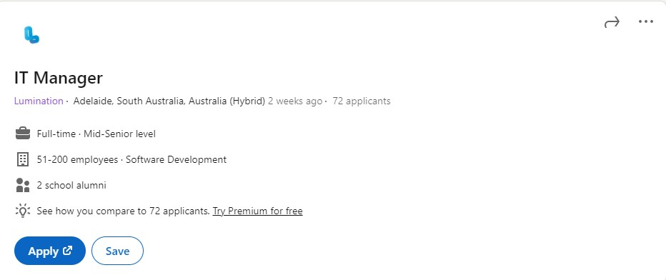

<cite<cite><W3schools.com. 2022. W3Schools online HTML editor. [online] 
Available at: <a href=https://www.w3schools.com/w3css/tryit.asp?filename=tryw3css_templates_dark_portfolio&stacked=h> 
</cite>
<!DOCTYPE html>
<html>
<head>
<title>Daniel S - RMIT - COSC2196IITA1</title>
<meta charset="UTF-8">
<meta name="viewport" content="width=device-width, initial-scale=1">
<link rel="stylesheet" href="https://www.w3schools.com/w3css/4/w3.css">
<link rel="stylesheet" href="https://fonts.googleapis.com/css?family=Montserrat">
<link rel="stylesheet" href="https://cdnjs.cloudflare.com/ajax/libs/font-awesome/4.7.0/css/font-awesome.min.css">
<style>
body, h1,h2,h3,h4,h5,h6 {font-family: "Montserrat", sans-serif}
.w3-row-padding img {margin-bottom: 12px}
/* Set the width of the sidebar to 120px */
.w3-sidebar {width: 120px;background: #222;}
/* Add a left margin to the "page content" that matches the width of the sidebar (120px) */
#main {margin-left: 120px}
/* Remove margins from "page content" on small screens */
@media only screen and (max-width: 600px) {#main {margin-left: 0}}
</style>
</head>
<body class="w3-black">

<!-- Icon Bar (Sidebar - hidden on small screens) -->
<nav class="w3-sidebar w3-bar-block w3-small w3-hide-small w3-center">
  <a href="../index.html" class="w3-bar-item w3-button w3-padding-large w3-hover-black">
    <i class="fa fa-home w3-xxlarge"></i>
    <p>HOME</p>
  </a>
  <a href="./personal-info.html" class="w3-bar-item w3-button w3-padding-large w3-hover-black">
    <i class="fa fa-user w3-xxlarge"></i>
    <p>PERSONAL INFO</p>
  </a>
  <a href="./ideal-job.html" class="w3-bar-item w3-button w3-padding-large w3-black">
    <i class="fa fa-eye w3-xxlarge"></i>
    <p>IDEAL JOB</p>
  </a>
  <a href="./personality-profile.html" class="w3-bar-item w3-button w3-padding-large w3-hover-black">
    <i class="fa fa-envelope w3-xxlarge"></i>
    <p>PERSONALITY PROFILE</p>
  </a>
    <a href="./project-idea.html" class="w3-bar-item w3-button w3-padding-large w3-hover-black">
    <i class="fa fa-envelope w3-xxlarge"></i>
    <p>PROJECT IDEA</p>
  </a>
   <a href="./references.html" class="w3-bar-item w3-button w3-padding-large w3-hover-black">
    <i class="fa fa-envelope w3-xxlarge"></i>
    <p>REFERENCES</p>
  </a>
</nav>

<!-- Navbar on small screens (Hidden on medium and large screens) -->
<div class="w3-top w3-hide-large w3-hide-medium" id="myNavbar">
  <div class="w3-bar w3-black w3-opacity w3-hover-opacity-off w3-center w3-small">
    <a href="../index.html" class="w3-bar-item w3-button" style="width:25% !important">HOME</a>
    <a href="./personal-info.html" class="w3-bar-item w3-button" style="width:25% !important">PERSONAL INFO</a>
    <a href="./ideal-job.html" class="w3-bar-item w3-button" style="width:25% !important">IDEAL JOB</a>
	<a href="./personality-profile.html" class="w3-bar-item w3-button" style="width:25% !important">PERSONALITY PROFILE</a>
	<a href="./project-idea.html" class="w3-bar-item w3-button" style="width:25% !important">PROJECT IDEA</a>
    <a href="./references.html" class="w3-bar-item w3-button" style="width:25% !important">REFERENCES</a>
  </div>
</div>

<!-- Page Content -->
<div class="w3-padding-large" id="main">
  <!-- Header/Home -->
  <header class="w3-container w3-padding-32 w3-center w3-black" id="home">
    <h1 class="w3-jumbo"><span class="w3-hide-small"></span>Ideal Job</h1>
    
	<br><br>
	<a href="https://www.linkedin.com/jobs/view/3246791687/?refId=zzyvUhK7S%2F9QqbHW%2BQJYog%3D%3D&trackingId=0YZvhjjlEYkskhkprmBMcg%3D%3D">LinkedIn Ad</a>
  </header>

  <!-- About Section -->
	<div class="w3-content w3-justify w3-text-light-grey w3-padding-64" id="description">
    <h2 class="w3-text-grey">Description of the position, and what makes this position appealing to you</h2>
    <hr style="width:200px" class="w3-opacity">
    <p>This is a management position to deliver large scale IT projects for a variety of clientele.  
	These projects include technology such as machine learning, VR and AR. 
	This involves leading a group of IT staff to deliver the project requirements. 
	This is appealing to me as it is dealing with cutting edge technology to better the lives of others.
    </p>
	
	<div class="w3-content w3-justify w3-text-light-grey w3-padding-64" id="about">
    <h2 class="w3-text-grey">Skills, qualifications and experience required for the position</h2>
    <hr style="width:200px" class="w3-opacity">
    <p>Experience in Information Technology is a must, and preferably in a leadership role in this context. 
	A degree in IT is highly preferable and industry certifications are also desired. 
	Knowledge about computer systems and programs is also essential. 
    </p>
	
	<div class="w3-content w3-justify w3-text-light-grey w3-padding-64" id="about">
    <h2 class="w3-text-grey">Skills, qualifications and experience I currently have</h2>
    <hr style="width:200px" class="w3-opacity">
    <p>I have a Certificate III in IT, I have completed ITIL Foundation 4, and I am a Microsoft Certified Technology Specialist (Windows 7 - Configuring). 
	I have worked in IT for the past 10 years and currently work for the Department of the Premier and Cabinet, South Australia.
    </p>
	
	<div class="w3-content w3-justify w3-text-light-grey w3-padding-64" id="about">
    <h2 class="w3-text-grey">A plan describing how you will obtain the skills, qualifications and experience required for the position, building on those you have now</h2>
    <hr style="width:200px" class="w3-opacity">
    <p>I will complete the Bachelor of Information Technology at RMIT. 
	Once completed, I can then look to completing a Graduate Degree in IT Management (not sure where I will do this). 
	I hope as I progress in my IT career, I will develop the necessary experience to be an IT Manager.
    </p>


  <!-- End Portfolio Section -->
  </div>

<!-- END PAGE CONTENT -->
</div>

</body>
</html>
